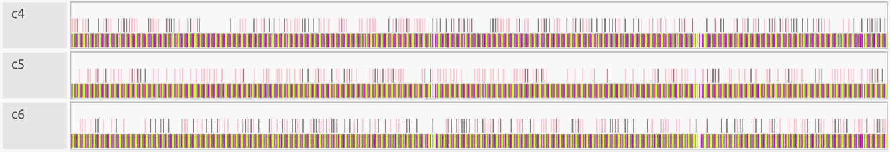
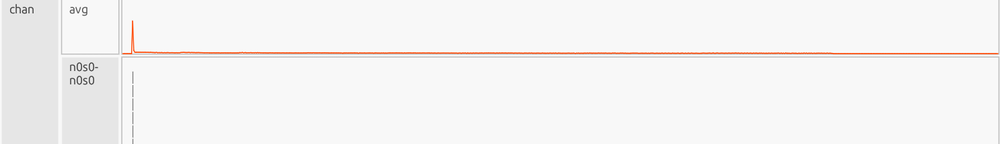
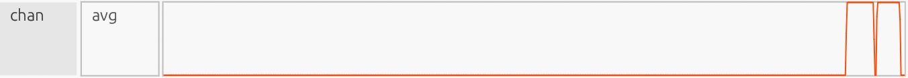
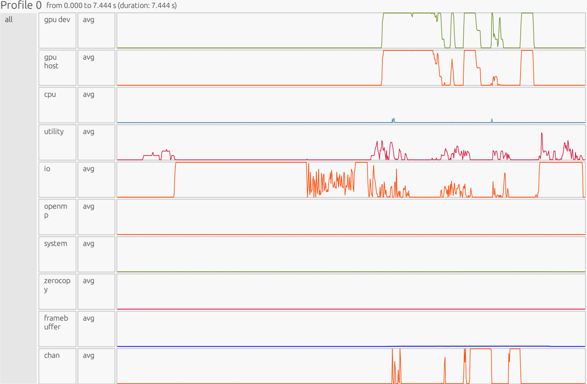
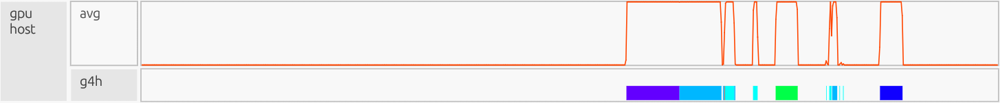
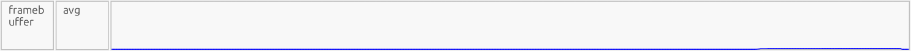

Advanced Topics in cuPyNumeric (Profiling & Debugging)#
Overview#
This section assumes familiarity with running cuPyNumeric, extending it with Legate Task, and scaling gradient boosting with Legate Boost. For a refresher, see:
Setting up your environment and running cuPyNumeric
Extending cuPyNumeric with Legate Task
Scaling gradient boosting with Legate Boost
cuPyNumeric scales familiar NumPy workloads seamlessly across CPUs, GPUs, and multi-node clusters. Previous sections covered how to get code running; here the focus shifts to making workloads production-ready. This includes finding bottlenecks, managing memory effectively, and preventing failures before they disrupt a job. This section focuses on two advanced capabilities in cuPyNumeric and the Legate runtime that address these challenges:
Profiling cuPyNumeric applications – to tune performance and analyze scalability. Profiling reveals bottlenecks such as idle GPUs, synchronization delays, or overly fine-grained tasks, helping you restructure code for better scaling.
Debugging and Out-of-Memory (OOM) strategies – to improve reliability in memory-intensive workloads. These tools help diagnose crashes, manage GPU/CPU memory effectively, and prevent common anti-patterns so applications remain robust under heavy loads.
What you’ll gain: By combining profiling with practical OOM-handling strategies, you can improve efficiency and scaling by identifying memory pressure and over-granular execution, while reducing OOM crashes and runtime stalls across CPUs, GPUs, and multi-node systems. |
For more detail, see the official references:
Usage#
1.) To install the built-in Legate profiler tool in your Conda environment, run:
conda install -c conda-forge -c legate legate-profiler
2.) After installing the Legate profiler (legate-profiler), profile the code using the ``–profile`` flag:
# CPU example
legate --cpus 8 --sysmem 4000 --profile myprog.py
# Single GPU example
legate --gpus 1 --profile myprog.py
# Multi-GPU example (single node, multi-rank: 4 ranks × 1 GPU)
srun -n 4 --mpi=pmix legate --gpus 1 --profile myprog.py
# Multi-node example (2 nodes × 4 GPUs = 8 ranks × 1 GPU)
srun -N 2 --ntasks-per-node=4 \
--gpus-per-task=1 --gpu-bind=single:1 \
--mpi=pmix -C gpu \
legate --gpus 1 --profile myprog.py
Similarly, a program can be run via the LEGATE_CONFIG environment
variable:
LEGATE_CONFIG="--cpus 8 --sysmem 4000 --profile" python ./myprog.py
3.) After a run completes, in the directory you ran the command you’ll see:
One or more raw trace files:
legate_*.prof(one per rank)
The legate_*.prof files are what you need to view locally on your machine.
# CPU / Single GPU - Will only produce 1 file (1 rank)
legate_0.prof
legate_prof/
# Multi-GPU - Will produce 1 file per rank (4 ranks)
legate_0.prof
legate_1.prof
legate_2.prof
legate_3.prof
legate_prof/
# Multi-Node (multi-rank; e.g, 2 nodes x 4 GPUs = 8 ranks)
legate_0.prof ... legate_7.prof
legate_prof/
Note: Trace files are numbered by rank index (e.g., legate_0.prof, legate_1.prof), not by run. If you run again in the same directory, files with the same rank numbers will be overwritten; for example, a 1-rank run will replace legate_0.prof. The legate_prof/ HTML report directory is also overwritten.
4.) Local Setup: WSL, Miniforge (Conda), and Legate + Legate profiler viewer
#These commands will work directly on a Linux environment.
#For Windows OS – open Ubuntu/WSL2 (Windows Subsystem for Linux), install Miniforge (Conda), and activate it.
# Download installer
wget https://github.com/conda-forge/miniforge/releases/latest/download/Miniforge3-Linux-x86_64.sh
# Install into home
bash Miniforge3-Linux-x86_64.sh -b -p "$HOME/miniforge3"
# Load Conda into current shell
source "$HOME/miniforge3/etc/profile.d/conda.sh"
# Configure future shells
conda init bash
# Restart shell to apply changes
exec $SHELL -l
# Create and activate an environment with Legate + cuPyNumeric + the profile viewer
conda create -n legate -y -c conda-forge -c legate legate cupynumeric legate-profiler
conda activate legate
5.) Copy files to your local device: Create a single top-level folder & keep runs separated to avoid name/file clashes:
# Copy legate_*.prof file(s) for CPU, single-GPU, Multi-GPU, or Multi-Node
scp -r <USER>@<REMOTE_HOST>:<REMOTE_RUN_DIR>/legate_*.prof \
"<LOCAL_DIR>/<FOLDER_NAME>/name_of_run"
6.) In local machine, use the following command to open files with the profile viewer:
# CPU/GPU: single file (rank 0/N0)
legate_prof view /path/to/legate_0.prof
# Multi-GPU/Multi-Node: multiple ranks (pass them all: e.g: N0, N1, N2, etc)
legate_prof view /path/to/legate_*.prof
For more detail, see the official references:
Profiling cuPyNumeric Applications with Legate Profilers – Example 1#
Inefficient code#
import cupynumeric as np
N = 10_000_000
x = np.random.random(N).astype(np.float32)
y = np.random.random(N).astype(np.float32)
# advanced indexing, extra comms/overhead
cond_idx = np.nonzero((x < 0.25) & (y > 0.5))
# extra temporaries
z = x + y
z_alt = x * y + 1.0
# scatter writeback through indices (slower than boolean mask)
z[cond_idx] = z_alt[cond_idx]
# tiny chunked updates, lots of tiny tasks
CHUNK = 4096
for s in range(0, N, CHUNK):
sub = z[s:s+CHUNK]
gt1 = sub > 1.0
sub[gt1] = sub[gt1] + 2.0
sub[~gt1] = sub[~gt1] - 2.0
How this code works#
This script builds two large random arrays, forms z = x + y, then
selectively overwrites elements of z with x * y + 1.0 where
(x < 0.25) & (y > 0.5), and finally inserts values above and below 1.0
by ±2.0. The performance suffers for three core reasons. First, it uses
nonzero(...) to create large integer index arrays and then scatters values
back into z, which adds metadata handling and communication overhead
compared with simple boolean masks. Second, it creates extra temporaries
(x + y and x * y + 1.0) instead of writing results into a preallocated
output, increasing memory traffic and allocations. Third, it processes the
array in 4,096-element slices, creating thousands of tiny tasks; the runtime
spends a disproportionate amount of time scheduling and synchronizing rather
than executing useful work. These choices increase memory pressure,
task-launch overhead, and communication costs, making the computation scale
poorly compared to a more direct, vectorized approach.
Array creation#
x = np.random.random(N).astype(np.float32)
y = np.random.random(N).astype(np.float32)
The snippet generates two large input arrays but uses .astype(...), which
forces an extra copy instead of producing the target data type directly.
np.random.random(N) returns float64, and produces an array of length
N filled with random floats sampled from [0, 1). The
.astype(np.float32) converts it to single precision (float32), which
halves the memory footprint.
Index selection via nonzero#
cond_idx = np.nonzero((x < 0.25) & (y > 0.5))
Here the code builds index arrays with nonzero. nonzero builds large
index arrays and forces a scatter write, increasing memory use and
kernel/communication overhead compared to a single, contiguous masked update.
Temporaries#
z = x + y
z_alt = x * y + 1.0
This section creates two large temporaries, increasing memory traffic and allocations.
Scatter assignment#
z[cond_idx] = z_alt[cond_idx]
Now the code scatters values back into z using advanced indexing, adding
overhead compared to mask-based updates.
Tiny-chunk loop#
CHUNK = 4096
for s in range(0, N, CHUNK):
sub = z[s:s+CHUNK]
gt1 = sub > 1.0
sub[gt1] = sub[gt1] + 2.0
sub[~gt1] = sub[~gt1] - 2.0
Finally the code breaks the array into thousands of small slices, which results in many tiny tasks; runtime overhead dominates useful computation.
Profiler Output and Interpretation - Inefficient CPU Results#

Interpretation: The profiler is presented as a timeline. The x-axis is time, the y-axis is organized by resource/utilization lanes. Each horizontal lane represents a particular resource stream (CPU workers, GPU Device/Host, runtime/Utility threads, memory pools like Framebuffer/Zerocopy, and copy/Channel). Colored boxes show work on that resource; the box width is how long it ran, gaps indicate idle/waiting, and dense “barcode” slivers usually mean many tiny tasks (high overhead), while long solid blocks indicate fewer, larger tasks (better utilization).
1) CPU#
What this shows#
User’s compute tasks, computations, and data movement on main CPU worker cores. Long, solid bars means a few large tasks/operations (good). Dense “bar-code” slivers means many tiny tasks (bad). This is where you read task time and spot idle gaps between tasks.

Zoomed in:
{kind=link}
CPU Observation:
Start-up shows a few large initialization tasks. After that, the 4,096-element slice loop fragments work into many small tasks, producing a barcode-like pattern. This displays overly fine-grained work that increases scheduling/launch overhead, creates idle gaps, and lowers CPU efficiency. Each small sliver represents “merged tasks” that execute separate small computations.
CPU Avg#

We observe a sharp startup spike in the CPU average line (~74% utilization),
followed by a long, low plateau. The spike corresponds to the large
element-wise operations (z = x + y, z_alt = x*y + 1.0). The subsequent
flat, low amplitude reflects the CHUNK = 4096 loop breaking work into
thousands of short slices, so cores never fully saturate. In the worker lanes
(c2-c9), this appears as a few early long, dark bars for the big operations,
then dense “bar-code” slivers across many cores for the rest of the run. Each
sliver is a tiny task from the slice loop. This fragmentation is bad: it
reduces sustained CPU utilization, increases context switching, and hurts cache
locality, so time shifts from steady computation to orchestrating tiny tasks.
What would good look like? A handful of long bars for the main operations, then just two long masked updates (plus/minus 2.0 step), as opposed to thousands of slivers. |
2) Utility#

What this shows#
Legate runtime “meta” work: dependence analysis, mapping, task launch, and coordination. These are tasks needed for the library to function but are not the user’s computation. You want short bursts around big tasks/operations. A sustained plateau means the scheduler is the bottleneck (threads are waiting on runtime work).
Utility Observation:
Sustained high activity almost the entire run, with only a late drop, runtime overhead dominates while on the other hand the computation is fragmented.
Utility Avg#

We observe a quick ramp-up into a long, flat plateau on the utility-average
line, followed by a drop near the end. The plateau indicates the runtime is
continuously mapping, performing dependency analysis, and launching thousands
of micro-tasks created by the CHUNK = 4096 slice loop. Near the tail, the
utility load decreases because launches are over and only cleanup/final copies
remain. In the utility lanes (u0-u1), this appears as dense “confetti” of tiny
meta-tasks, which is the signature of over-granularity keeping the scheduler
busy almost all the time. The slice loop (for s in range(0, N, 4096))
drives persistent mapping/launch work; the index selection + scatter pattern
(nonzero + z[idx] = …) adds per-slice dependence checks and
data-placement decisions; and extra temporaries (z, z_alt) create more
instances for the runtime to allocate and track. Bottom line: bad, time is
more so spent orchestrating rather than computing, often coinciding with idle
gaps on the CPU lanes.
What would good look like? Short, discrete bursts around a few large tasks/operations (in-place add, one masked overwrite, two whole-array threshold updates), with the utility lanes mostly quiet between them. |
3) I/O (input/output)#

What this shows#
This lane is Legate TopLevelTask / driver time; file reads/writes are a
subset. Use it alongside Channel (which records data between host and device)
to reason about data movement. Spikes usually reflect large reads/writes or
heavy top-level coordination; a thin, steady baseline suggests many small
I/O/driver events. GPU or CPU gaps often correlate with I/O or Channel
activity, but can also come from Utility (mapping) or dependencies.
I/O observation:
We see early heavy activity due to big copies, then a long low baseline of small transfers, followed by a tall plateau near the end. The large data movement pattern itself comes through Channel (scatter writes + tiny chunks), while the I/O lane shows the top-level Python/driver work around it. The dark magenta color represents I/O tasks actively executing. The lighter pink you see earlier are the same I/O tasks while waiting/ready but not running yet. The profiler will use shade to indicate state:
Darkest shade = actively executing
Intermediate shade = ready state
Lightest shade = task is blocked
Gray = groups of tiny tasks
I/O Avg#

We observe an early spike that settles into a short plateau as the program
initializes and writes full arrays for the temporaries (z = x + y,
z_alt = x*y + 1.0). This transitions into a long, low baseline reflecting
ongoing top-level coordination associated with many small, non-contiguous
transfers triggered by the nonzero scatter and the CHUNK = 4096 slice
loop (you’ll see the transfer shape itself in Channel as a thin, persistent
baseline). Near the end, the line rises again, a late plateau, as outstanding
copies drain and instances are finalized during cleanup, then it drops to
zero. Bottom line: Bad, more time is going to data movement/coordination
instead of compute, and it correlates with high Utility and fragmented CPU
(idle/long-poll symptoms).
What would good look like? Brief I/O bursts only: write once to a preallocated output, one masked overwrite, then quiet channels, few wide transfers, no long baseline. |
4) System#
What this shows#
Low-level system memory activity: allocations, thread/process setup, OS interaction, and other background work. It should be quiet and flat during steady computation.

System Observation:
We observe a small early bump from normal startup work (process/thread creation and initial allocation), followed by a flat, low sitting plateau indicating minimal ongoing system overhead, and a slight dip at the end as the program shuts down and cleans up. Bottom line: good/neutral, system stays low and stable; the real bottlenecks are elsewhere (CPU fragmentation, Utility overhead, and I/O/Channel traffic).
5) Channel (chan)#
What this shows#
Communication pathways grouped by source to destination memory. These are the Direct Memory Access (DMA) copies that move data between host DRAM, GPU Framebuffer memory, zero-copy memory, and sometimes system/network buffers. Tall wide bursts mean large continuous transfers (efficient). Thin, persistent baselines means many small transfers, often from over-granular work (scatter/gather, slice loops).
{kind=link}

Channel Observation:
The gray rectangles are merged visuals: when zoomed out, the profiler compacts hundreds/thousands of micro-copies into gray bands; zooming in reveals the individual narrow copy boxes, confirming over-granularity. Net effect: poor effective throughput, each micro-copy pays setup/latency and increases mapping/synchronization load (seen as a busy Utility lane), and the fragmented transfers create idle gaps on CPU lanes while tasks wait for data.
Channel Avg#

One early blip (initial large copy into device memory), then a long, faint
baseline, which is the flood of small scatter/gather copies from
nonzero(...) indexing and the CHUNK = 4096 loop. Each tiny slice
forces its own DMA operation.
What would good look like? A handful of short, tall bursts around the major steps: write once into |
6) Dependent Partitioning (dp)#
What this shows#

Time the runtime spends creating dependent region partitions (subregions derived from other regions), this is needed for sliced, indirect, or masked operations. Partitioning must finish before mapping/copies can proceed. It’s a niche, hyper-specific metric that often reads near zero in simple workloads, but can matter in more complex applications (e.g., sparse matrix operations, irregular graphs, adaptive meshes) where partition shapes change frequently.
DP Observation:
The dp avg line is flat at ~0% utilization for the whole run, indicating
partition work is negligible in total time. In dp0 you still see a long gray
“merged” band: that’s the view compacting many ultra-short partition events
(from the 4,096-element slice loop and the nonzero(...) scatter) into a
single bar at this zoom level. Each event is tiny, so even though there are
lots of them, their duty cycle is so low that average utilization rounds to
zero.
Interpretation#
Partition creation is not the primary bottleneck here (Utility and Channel are). However, those micro-partitions still add overhead and can lengthen critical paths by forcing extra dependencies before copies/updates launch. The better alternative would be to keep dp light by avoiding per-slice/indirect updates and preferring whole-array masked writes and reused partitions so the runtime doesn’t need to generate countless micro-partitions.
Inefficient GPU Results - (4 Ranks 1 GPU each)#
All ranks:

Interpretation: The profiler is presented as a timeline. The x-axis is time, the y-axis is organized by resource/utilization lanes. Each horizontal lane represents a particular resource stream (CPU workers, GPU Device/Host, runtime/Utility threads, memory pools like Framebuffer/Zerocopy, and copy/Channel). Colored boxes show work on that resource; the box width is how long it ran, gaps indicate idle/waiting, and dense “barcode” slivers usually mean many tiny tasks (high overhead), while long solid blocks indicate fewer, larger tasks (better utilization).
1) GPU Dev#
What this shows#
Execution of kernels directly on the GPU Device. This lane measures how long GPU execution units are busy running element-wise operations, reductions, matrix kernels, etc. High steady utilization means kernels are big and well-batched; low or jagged utilization means the GPU is either idle or getting too many tiny launches.

GPU Dev Observation:
In the GPU Dev lane we see wide gray bands at zoom compress many
micro-kernels; zooming in reveals dense strips, each a tiny kernel from the
4,096-element slices or the scatter path. Above that we see many repeated,
sawtooth-like spikes rather than long, solid bars. z = x + y and
z_alt = x* y + 1.0 each launch element-wise kernels early (brief higher
utilization). cond_idx = np.nonzero((x < 0.25) & (y > 0.5)) computes a
boolean test and then materializes index arrays; subsequent
z[cond_idx] = z_alt[cond_idx] performs a scatter update that splits work,
producing multiple small kernels instead of one contiguous masked write. The
loop with CHUNK = 4096 (sub = z[s:s+CHUNK]; threshold; two per-slice
updates) generates thousands of tiny, per-chunk kernels. Each chunk does:
compare, select, then two updates, so the device keeps starting and stopping
kernels rather than running a few big ones.
GPU Dev Avg#

At startup the line lifts due to big element-wise operations. It then gradually sinks lower, oscillating high to low. That indicates persistent GPU activity, but fine granularity: per-chunk/per-scatter kernels are short, so launch overhead and synchronization eats into total time.
What would good look like? A few long, contiguous kernels that keep the device busy: one large vector add, one single masked overwrite (no scatter), etc. The GPU Dev lane shows long solid bars with a high, steady average line, minimal gaps between kernels, and compute overlapping cleanly with a few bulk copies (seen in Channel). |
2) GPU Host#
What this shows#
CPU-side orchestration for GPU work: kernel launches, argument setup, enqueueing tasks, and prepping memory transfers. You want brief bursts per large kernel, not continuous chatter/oscillation.

GPU Host Observation:
Frequent spikes/oscillations mirror GPU Dev, such that the code launches many tiny kernels:
nonzero(...)+z[cond_idx] = z_alt[cond_idx]adds scatter setup and extra small launches.CHUNK = 4096loop creates per-slice compare + two updates, so the host repeatedly launches micro-kernels.
GPU Host Avg#

High, jagged baseline after a startup spike means launch overhead is sustained. Host time tracks GPU Dev closely, an obvious indication of over-granularity (per-launch cost comparable to work done).
What would good look like? Sparse, short spikes only when launching those few large kernels. The GPU Host lane is a little lower and quieter than GPU Dev. Brief bursts at kernel starts, then long idle periods while the device executes. No dense “barcode” of micro-launches. Will look very similar to GPU Dev. |
3) Zerocopy#
What this shows#
Transfers between CPU host memory and GPU memory using pinned host memory directly accessible by the GPU. Useful when data is accessed only once or in small pieces. Ideally, you see just a few bursts; heavy use usually means data isn’t staged efficiently in device memory.

Zerocopy Observation:
The avg line is pinned at a ~0% utilization for the entire run. If this section was expanded you would see many blocks gradually getting larger as you scroll down due to the 4,096-element slice loop, but their duty cycle is so small that utilization rounds to zero. Any zero-copy use here is incidental and negligible compared with other streams. Zerocopy is not a bottleneck.
4) Framebuffer#
What this shows#
Time the profiler records GPU Framebuffer (device memory) allocation, deallocation, or access overhead. This isn’t the math itself, but the memory management cost for storing temporaries and outputs in device memory. Ideally this lane should stay low and quiet, with only brief bumps for allocation at startup and cleanup at shutdown.

Framebuffer Observation: The avg line rises gradually to ~2–3% utilization and holds steady through most of the run, dipping only near the end. That reflects sustained allocation/instance traffic, likely from:
Extra temporaries (
z = x + y,z_alt = x*y+1.0) creating more device instances than necessary.Scatter updates (
z[cond_idx] = …) forcing additional partitioned storage.The
CHUNK = 4096loop repeatedly touching small subregions.
What would good look like? A small bump at initialization (allocate main arrays), flat near zero during steady compute, and a dip at the end (cleanup). No continuous Framebuffer overhead, just data living in device memory for long stretches while kernels run. |
Efficient Code#
import cupynumeric as np
N = 10_000_000
rng = np.random.default_rng()
x = rng.random(N, dtype=np.float32)
y = rng.random(N, dtype=np.float32)
# In-place sum without a temporary
z = np.empty_like(x)
np.add(x, y, out=z)
# Conditional overwrite with a boolean mask (faster than nonzero + scatter)
cond = (x < 0.25) & (y > 0.5)
np.putmask(z, cond, x * y + 1.0)
# Wide masked updates, in-place
gt1 = z > 1.0
z[gt1] += 2.0
z[~gt1] -= 2.0
How this code works#
This program generates two large float32 arrays directly from the Generator
API (no extra casts), computes z = x + y directly into a preallocated
output, selectively overwrites elements of z with x*y + 1.0 where
(x < 0.25) & (y > 0.5), and then applies two wide, in-place updates that
add or subtract 2.0 based on whether values exceed 1.0. It’s efficient because
it avoids unnecessary temporaries by writing into a preallocated array, uses a
boolean mask instead of creating index arrays, and performs the final
adjustments as wide vectorized operations rather than many small slices. These
choices reduce memory traffic, task-launch overhead, and communication costs,
leading to better utilization and scalability on both CPU and GPU.
Array creation (data type & copies)#
# inefficient
x = np.random.random(N).astype(np.float32)
y = np.random.random(N).astype(np.float32)
# efficient
rng = np.random.default_rng()
x = rng.random(N, dtype=np.float32)
y = rng.random(N, dtype=np.float32)
Using the Generator API, rng = np.random.default_rng(); x = rng.random(N,
dtype=np.float32), creates arrays in the target dtype at the source, so
there’s no float64 to float32 downcast and no extra allocation/copy.
That cuts memory traffic and peak footprint, improves cache/GPU memory
efficiency, and avoids the false impression that astype(copy=False) would
help, since casting to a new dtype always requires a copy. In short: fewer
bytes moved, fewer temporaries, faster start-up.
Base computation#
# inefficient
z = x + y
# efficient
z = np.empty_like(x)
np.add(x, y, out=z)
Both compute x + y. The efficient code writes directly into a preallocated
output, avoiding a full temporary allocation and an extra pass over memory.
This reduces peak memory and improves cache/GPU memory efficiency.
Conditional overwrite (indices vs mask)#
# inefficient
cond_idx = np.nonzero((x < 0.25) & (y > 0.5))
z_alt = x * y + 1.0
z[cond_idx] = z_alt[cond_idx]
# efficient
np.putmask(z, (x < 0.25) & (y > 0.5), x * y + 1.0)
The efficient version applies the condition directly inside putmask, so no
large index arrays are built and it is easier for the runtime to fuse/optimize.
This keeps the update lightweight and communication-friendly. The inefficient
version materializes index arrays, creates an additional full-size temporary
(z_alt), and performs a scatter assignment, each adding overhead.
Chunked loop vs Vectorized#
# inefficient
CHUNK = 4096
for s in range(0, N, CHUNK):
sub = z[s:s+CHUNK]
gt1 = sub > 1.0
sub[gt1] = sub[gt1] + 2.0
sub[~gt1] = sub[~gt1] - 2.0
# efficient
gt1 = z > 1.0
z[gt1] += 2.0
z[~gt1] -= 2.0
The efficient approach performs two wide, in-place vectorized updates over the whole array. This eliminates thousands of tiny tasks, dramatically reducing launch and scheduling overhead and improving GPU/CPU utilization. The more regular access pattern also plays nicely with caches and the memory controller, boosting overall utilization.
Profiler Output and Interpretation - Efficient CPU Results#

Interpretation: The profiler is presented as a timeline. The x-axis is time, the y-axis is organized by resource/utilization lanes. Each horizontal lane represents a particular resource stream (CPU workers, GPU Device/Host, runtime/Utility threads, memory pools like Framebuffer/Zerocopy, and copy/Channel). Colored boxes show work on that resource; the box width is how long it ran, gaps indicate idle/waiting, and dense “barcode” slivers usually mean many tiny tasks (high overhead), while long solid blocks indicate fewer, larger tasks (better utilization).
CPU#

Why this is good:
Few longer bars, minimal “barcode.” Work is consolidated into large tasks; cores stay busy with little orchestration. CPU avg: Large, contiguous vector ops (add, mask, updates) keep per-task overhead tiny vs compute, so the runtime batches the work rather than slicing it into thousands of tiny tasks.
Efficient Code:
z = np.empty_like(x); np.add(x, y, out=z): leads to no temporary, it is one large pass instead of build+copy.np.putmask(z, (x < 0.25) & (y > 0.5), x*y + 1.0): mask, not scatter; avoids index arrays and irregular writes.z[gt1] += 2.0; z[~gt1] -= 2.0: leads to two whole-array updates, noCHUNK = 4096loop, which means no thousands of tiny tasks.
Utility#

{kind=link}

Why this is good:
Quiet baseline with brief bursts at the end. Mapping/scheduling is compact; most time is in real compute. The late burst corresponds to final mapping/sync before completion. Little “confetti” in the utility lanes means few meta-tasks; dependencies are simple and batched. Low avg line except at startup/teardown mean orchestration cost is small vs. compute.
Efficient Code:
np.add(x, y, out=z): one big operation; fewer instances to map/track.np.putmask(z, cond, x*y + 1.0): mask, not scatter; avoids index arrays and per-slice dependency checks.z[gt1] += 2.0; z[~gt1] -= 2.0: two whole-array updates, noCHUNK = 4096loop which means no thousands of tiny tasks.
I/O#

Why this is good:
The lane is dominated by a long, tall plateau that is a single TopLevelTask block with only a few short blips for init/teardown, there is no mid-run I/O plateaus. The avg line stays flat/low between blips with no steady chatter, this means host to device copies are not here (they’d appear in Channel, which stays quiet). Top-level orchestration is minimal, the time goes to compute, not file I/O or driver overhead.
Efficient Code:
np.add(x, y, out=z): writes directly to a preallocated output; avoids extra writes/allocs.np.putmask(z, cond, x*y + 1.0): mask, not scatter; no index arrays, fewer driver events.z[gt1] += 2.0; z[~gt1] -= 2.0: two whole-array updates, noCHUNK = 4096loop, so the runtime doesn’t generate many tiny top-level actions (Channel also stays free of thin, persistent copy baselines).
System#

Why this is good:
Near-zero for most of the run, with only a gradual rise to ~8% late in the timeline (allocator growth/instance finalization/teardown). No mid-run plateaus, the OS/allocator work isn’t the bottleneck; compute and bulk copies dominate.
Efficient Code:
np.add(x, y, out=z): avoids an extra temporary/allocation.np.putmask(z, cond, x*y + 1.0): mask update, no large index arrays to allocate/manage.z[gt1] += 2.0; z[~gt1] -= 2.0: two whole-array updates, noCHUNK = 4096loop, so far fewer small allocation/synchronization points at the system.
Channel (chan)#
{kind=link}
Why this is good:
Quiet baseline for most of the run; no thin, persistent copy noise. A couple of tall plateaus only when needed for bulk transfers/flush at the end. Indicates high effective throughput: few large DMA copies, minimal per-copy overhead, and little sync pressure on Utility/CPU.
Efficient Code:
np.add(x, y, out=z): writes once into a preallocated output; avoids extra traffic.np.putmask(z, cond, x*y + 1.0): boolean mask, not scatter; no irregular index copies.z[gt1] += 2.0; z[~gt1] -= 2.0: two whole-array updates, noCHUNK = 4096loop, this eliminates floods of tiny copies.
Efficient Multi-GPU Results - (4 Ranks 1 GPU each)#
All ranks:
{kind=link}
Interpretation: The profiler is presented as a timeline. The x-axis is time, the y-axis is organized by resource/utilization lanes. Each horizontal lane represents a particular resource stream (CPU workers, GPU Device/Host, runtime/Utility threads, memory pools like Framebuffer/Zerocopy, and copy/Channel). Colored boxes show work on that resource; the box width is how long it ran, gaps indicate idle/waiting, and dense “barcode” slivers usually mean many tiny tasks (high overhead), while long solid blocks indicate fewer, larger tasks (better utilization).
GPU Dev#

Why this is good:
Steady compute time: The green “avg” line goes high and stays high while work runs. That means the GPU is busy doing math, not waiting around. Few, wide kernels: Solid, thick bars mean big kernels that do lots of work per launch (less start/stop overhead). Gaps between kernels are short, showing good overlap with transfers and low idle time. Device time is spent on real computation (vector add, masked overwrite, threshold updates) instead of launch/sync overhead.
Efficient Code:
np.add(x, y, out=z): launches a single wide vector add kernel, not build+copy+separate add.np.putmask(z, cond, x*y + 1.0): compiles to one masked overwrite kernel; avoids scatter that would fragment into many micro-kernels.z[gt1] += 2.0; z[~gt1] -= 2.0: just two whole-array updates, not thousands ofCHUNK = 4096slice updates.
GPU Host#
{kind=link}
Why this is good:
Mostly quiet baseline with a few short bursts aligned to device kernels showing minimal launch/orchestration overhead. Avg line stays low between bursts; no comb/“barcode” pattern of micro-launches. The host is mostly idle while the GPU runs long kernels, which is exactly what you want. Clear separation of roles: CPU briefly issues work; GPU does the heavy lifting.
Efficient Code:
np.add(x, y, out=z): one large launch, not build+copy+extra kernel.np.putmask(z, cond, x*y + 1.0): mask update (no scatter/nonzero), avoiding extra setup and multiple small launches.z[gt1] += 2.0; z[~gt1] -= 2.0: just two whole-array updates, noCHUNK = 4096loop means orders of magnitude fewer launches.
Framebuffer#
{kind=link}
Why this is good:
Low flat line that stays at ~0% utilization most the run then gradually builds up to ~1% utilization at the end, showing memory management isn’t a bottleneck. Alloc/teardown bumps are short; there’s no mid-run allocation mess, so data lives in device memory while kernels run.
Efficient Code:
np.add(x, y, out=z): writes into a preallocated output (no extra full-size temporary to allocate/free).np.putmask(z, cond, x*y + 1.0): mask update, not scatter (avoids partitioned/irregular storage and extra instances).z[gt1] += 2.0; z[~gt1] -= 2.0: two whole-array passes, noCHUNK = 4096loop (prevents thousands of small ephemeral instances).
Zerocopy#

Why this is good:
Avg stays at ~0% utilization for the entire run, Zerocopy traffic is negligible. Only a few short alloc/free ticks near the end; no background chatter. No measurable Zerocopy activity. That means that Zerocopy wasn’t used for steady data movement. Instead, data was staged in device memory and moved through the normal Channel (DMA) path, with no measurable reliance on pinned host memory.
Efficient Code:
np.add(x, y, out=z): computes in-place into a preallocated device array, avoiding extra host to device touches.np.putmask(z, cond, x*y + 1.0): mask update (nononzero + scatter), preventing irregular host-pinned traffic.z[gt1] += 2.0; z[~gt1] -= 2.0: two whole-array kernels (no CHUNK loop), so there aren’t many tiny host-access events to begin with.
Profilers - Wrap Up#
By using Legate’s built-in profiler, you gain the ability to uncover hidden bottlenecks and inefficiencies in your code. Profiling doesn’t just expose “bugs”, it provides a lens to reason about performance and systematically improve it. What looks like small structural tweaks (fusing operations, avoiding scatter writes, and cutting temporaries), translates into fewer tasks, less orchestration, and higher throughput. This results in a clear transition between average code that “just runs” to efficient, scalable, and production-ready code. Profiling turns performance tuning from guesswork into an intentional, data-driven process that elevates code quality from functional to excellent.
One of the most powerful features is that the view is traceable across resources. You can click a task in one panel (e.g., GPU Dev) and use its task identifier (or other metadata) to search and locate the same operation elsewhere. For example, in Utility to see when it was mapped/launched, or in Channel to see whether data movement occurred around it. This interactive cross-panel “follow the task” workflow makes it much easier to connect a performance symptom (GPU idle time, dense micro-tasks, unexpected transfers) back to the runtime activity and operations that caused it. The search also supports multiple keys (not only task IDs), which helps quickly group and investigate related work.
Understanding and Handling Out-of-Memory (OOM) Issues – Example 2#
How OOM Occurs#
cuPyNumeric runs on top of Legate Core. At launch, the legate launcher
auto-sizes memory pools for each “memory kind” it detects (e.g., CPU
SYSTEM_MEM, and GPU framebuffer) on the assigned process/GPU. You can
override these defaults to fixed sizes if needed with flags such as
--sysmem (MiB of host DRAM) and --fbmem (MiB of GPU memory). If an
operation needs to create a new instance that exceeds the reserved capacity of
a pool, the runtime raises an out-of-memory error for that memory kind (e.g.,
SYSTEM_MEM or FBMEM) and reports the task/store that triggered it.
Why this matters: Most “mystery OOMs” aren’t total node exhaustion, they’re per-process, per-kind pool exhaustion. The fix is often to:
Right-size those pools.
Reduce peak live instances so they fit.
Demo Script#
We’ll intentionally run with a tiny SYSTEM_MEM pool to trigger a controlled
OOM.
import cupynumeric as np
# allocation site, not instantiated yet
a = np.ones((1024 * 1024 - 2,))
# allocation site, not instantiated yet
b = np.zeros((1024 * 1024,))
# use only a slice of b; causes b#1
b[1:-1] = a
# use full b; causes instance b#2
c = b + 2
# will fail
d = c + 3
CPU-only run (deterministic OOM)#
# LEGATE_TEST=1: verbose allocation diagnostics
LEGATE_TEST=1 legate --cpus 1 --gpus 0 --sysmem 40 --provenance oom.py
LEGATE_TEST=1 enables diagnostic/verbose mode: detailed allocation
information such as logical store creation, instance sizes, and memory
reservations, as opposed to a brief undescriptive error message.
--provenance tells Legate/Legion to record call provenance. From 25.11 onward, this flag (or --profile) is required to get the [/path/to/file.py:LINE] locations in OOM messages and traces. Enabling call provenance will cause stack trace information to be included in Legion profiles, progress output, nvtx ranges, and some error messages. Without provenance enabled, you’ll still see the task name and memory kind, but not the exact Python source location.
legate --cpus 1 --gpus 0 --sysmem 40 oom.py runs the script oom.py
with one CPU worker and a fixed system memory pool of 40 MiB. Legate will
pre-allocate a 40 MiB region from host DRAM to use for all CPU-side array
instances (SYSTEM_MEM). Any time an operation requires more than this
reserved pool, you’ll see a Failed to allocate… of kind SYSTEM_MEM error.
GPU run (FBMEM behavior)#
# Single GPU, intentionally tight framebuffer pool
LEGATE_TEST=1 legate --cpus 2 --gpus 1 --fbmem 40 --sysmem 512 --provenance oom.py
Tip: Flags are per process. If you use multiple ranks per node, each rank needs
its own slice of --sysmem / --fbmem.
Steps to Diagnose OOM#
Step 1. Read The OOM Line#
When an OOM happens, the failure line will tell you the memory kind that ran
out (e.g., of kind SYSTEM_MEM or GPU framebuffer) and which task/logical
store was being created when it failed. That points you at the operation that
spiked usage.
OOM Error Message (CPU example):
Failed to allocate 8388608 bytes on memory 1e00000000000000 (of kind SYSTEM_MEM) for region requirement(s) {1} of Task cupynumeric::BinaryOpTask[/home/USER/d/cupynumeric/oom.py:16] (UID 8)
corresponding to a LogicalStore allocated at /home/USER/d/cupynumeric/oom.py:16 There is not enough space because Legate is reserving 33554400 of the available 41943040 bytes for the following LogicalStores:
LogicalStore allocated at /home/USER/d/cupynumeric/oom.py:13:
Instance 4000000000000003 of size 8388608 covering elements <0>..<1048575>
created for an operation launched at /home/USER/d/cupynumeric/oom.py:13
LogicalStore allocated at /home/USER/d/cupynumeric/oom.py:7:
Instance 4000000000000002 of size 8388608 covering elements <0>..<1048575>
created for an operation launched at /home/USER/d/cupynumeric/oom.py:13
Instance 4000000000000001 of size 8388592 covering elements <1>..<1048574>
created for an operation launched at /home/USER/d/cupynumeric/oom.py:10
LogicalStore allocated at /home/USER/d/cupynumeric/oom.py:4:
Instance 4000000000000000 of size 8388592 covering elements <0>..<1048573>
created for an operation launched at /home/USER/d/cupynumeric/oom.py:10
Decode Error Message:#
Important failure line:
Failed to allocate 8388608 bytes on memory 1e00000000000000 (of kind SYSTEM_MEM) for region requirement(s) {1} of Task cupynumeric::BinaryOpTask[/home/USER/d/cupynumeric/oom.py:16] (UID 8)
Interpretation: Legate attempted to allocate an 8 MiB array in the 40 MiB
SYSTEM_MEM pool for the BinaryOpTask at line 16, but no contiguous
free block was available. The OOM originates from that task.
Segment#
Failed to allocate 8388608 bytes
The runtime tried allocating ~8 MiB for a new array instance. This is the size of the region (number of elements * element size).
on memory 1e00000000000000 (of kind SYSTEM_MEM)
Internal ID of the memory pool; every memory kind (
SYSTEM_MEM,FBMEM,ZCMEM) has a unique 64-bit handle.(of kind ..)tells you which memory pool failed, here, system memory (CPU DRAM). If it saidFBMEM, it would be GPU framebuffer memory.for region requirement(s) {1}
Internal bookkeeping number identifying which logical region of the task requested the allocation.
of Task cupynumeric::BinaryOpTask[/home/USER/d/cupynumeric/oom.py:16] (UID 8)
The task name that triggered the allocation.
BinaryOpTaskcorresponds to a basic elementwise operation in cuPyNumeric (e.g., addition, subtraction).[/home/USER/…:16]is the exact source line that triggered the failed operation (d = c + 3) in the demo (e.g.,{"file": "/home/USER/d/cupynumeric/oom.py", "line": 16}).UIDis a unique ID assigned to this particular task invocation by the runtime, it is useful when correlating with profiler traces.
Rest of OOM Error Message#
corresponding to a LogicalStore allocated at /home/USER/d/cupynumeric/oom.py:16 There is not enough space because Legate is reserving 33554400 of the available 41943040 bytes for the following LogicalStores:
LogicalStore allocated at /home/USER/d/cupynumeric/oom.py:13:
Instance 4000000000000003 of size 8388608 covering elements <0>..<1048575>
created for an operation launched at /home/USER/d/cupynumeric/oom.py:13
LogicalStore allocated at /home/USER/d/cupynumeric/oom.py:7:
Instance 4000000000000002 of size 8388608 covering elements <0>..<1048575>
created for an operation launched at /home/USER/d/cupynumeric/oom.py:13
Instance 4000000000000001 of size 8388592 covering elements <1>..<1048574>
created for an operation launched at /home/USER/d/cupynumeric/oom.py:10
LogicalStore allocated at /home/USER/d/cupynumeric/oom.py:4:
Instance 4000000000000000 of size 8388592 covering elements <0>..<1048573>
created for an operation launched at /home/USER/d/cupynumeric/oom.py:10
Rest of OOM Error Message – Meaning#
corresponding to a LogicalStore allocated at /home/USER/d/cupynumeric/oom.py:16
A
LogicalStoreis Legate’s internal representation of an array region (or “view”) that lives somewhere in memory. This line confirms that the store associated withoom.py:16(d = c + 3) is the one that failed. The runtime attempted to map that store to physical memory but couldn’t satisfy the allocation.Note: You can now pinpoint the failure to a specific variable (the result of
d = c + 3) and know it wasn’t an earlier array but a new instance being materialized.There is not enough space because Legate is reserving 33554400 of the available 41943040 bytes for the following LogicalStores:
41943040bytes - Total reserved pool size forSYSTEM_MEM→ 40 MiB (--sysmem 40).33554400bytes - Amount already reserved/consumed by existing instances (about 32 MiB/Mebibyte).Note: Out of the 40 MiB pool, roughly 32 MiB is occupied by other arrays. The remaining ~8 MiB isn’t a free, contiguous block large enough to hold a new instance once alignment and headers are included, and the mapper keeps currently mapped instances reserved (non-evictable) while creating the next one. See Overview below for more information.
LogicalStore allocated at /home/USER/d/cupynumeric/oom.py:13:
Instance 4000000000000003 of size 8388608 covering elements <0>..<1048575> created for an operation launched at /home/USER/d/cupynumeric/oom.py:13From this line, details where the allocated memories go.
oom.py:13 = c = b + 2Instance 4000000000000003- Internal instance ID. Used internally for tracking physical allocations.size 8388608- 8 MiB allocatedcovering elements <0>..<1048575>- Range of local elements this instance covers, 1 million elements (0 → 1,048,575).created for an operation launched at…- Confirms which operation produced this instance (line 13).
LogicalStore allocated at /home/USER/d/cupynumeric/oom.py:7:
Instance 4000000000000002 of size 8388608 covering elements <0>..<1048575> created for an operation launched at /home/USER/d/cupynumeric/oom.py:13 Instance 4000000000000001 of size 8388592 covering elements <1>..<1048574> created for an operation launched at /home/USER/d/cupynumeric/oom.py:10Line 7 corresponds to
b = np.zeros(...).Because
bwas sliced (b[1:-1] = a) and reused (c = b + 2), multiple physical instances exist for the same logical storeb. Each instance (~8MiB) represents a materialized subregion or copy created by different downstream operations./home/USER/d/cupynumeric/oom.py:10 → b[1:-1] = aThis slice assignment materializes instances for bothaand the sliced view ofb. That’s why you see instances tied to line 10 for the stores at lines 4 (a) and 7 (b) in the OOM list. Those instances stay reserved while later ops run, which is what tightens the pool and makes thed = c + 3allocation at line 16 fail.LogicalStore allocated at /home/USER/d/cupynumeric/oom.py:4:
Instance 4000000000000000 of size 8388592 covering elements <0>..<1048573> created for an operation launched at /home/USER/d/cupynumeric/oom.py:10Line 4 is
a = np.ones(...).aremains in memory as an 8 MB instance used earlier by slice assignments.Note:
a’s memory allocation still exists in the runtime even though it’s not directly used later, it hasn’t been freed because it’s referenced byb[1:-1] = a.
Overview#
The pool reaches capacity because older arrays (a, b, c) memory
allocations still exist in the runtime and haven’t been released or reclaimed
yet. The new result for d = c + 3 can’t fit at the moment. The “why” is a
mix of pool size and live instances the program keeps around. From the above
descriptions, we can see that previous arrays and allocations take up ~32MiB
out of the reserved pool of 40MiB.
Pool size (
SYSTEM_MEM): 40 MiB = 41,943,040 bytesAlready Reserved: 33,554,400 bytes (~32MiB) across four ~8 MiB instances (
a,bslice/full,c).Leftover: 41,943,040 - 33,554,400 = 8,388,640 bytes
The new instance wants 8,388,608 bytes. That looks like it should fit (32 extra bytes), but it still fails because the runtime’s alignment and per-instance bookkeeping make the actual footprint a bit larger than the printed payload (8,388,608 bytes). So 32 MiB used + 8 MiB new in a 40 MiB pool can still OOM. A real instance needs payload + per-instance overhead (e.g., internal instance header/descriptor and alignment padding managed by Realm/Legion). Even a modest header (> 64–256 bytes, typical for a descriptor + aligned field layout) pushes the actual requirement to > 8,388,672 bytes, which exceeds the 8,388,640 bytes free. The “reserved … for the following LogicalStores” list shows the requested instance sizes (the array field bytes). It doesn’t itemize allocator extras like per-instance headers, layout descriptors, or alignment padding the Realm/Legion allocator needs to place the instance in that memory.
Step 2. Verify Resource Reservations#
Confirm the runtime actually reserved enough memory for your process(es): use
--show-config, and remember that flags are per process. When you run
multiple ranks per node, each process needs its own slice of CPU/GPU memory,
sometimes you may even need to reduce per-rank --sysmem/bind CPUs.
--show-config is a fast sanity check that explains an OOM is due to
mis-sizing pools per rank.
Catches misconfig: Confirms your per-rank
--sysmem/--fbmem/--zcmemare what you think they are. If too big for the node or for R ranks, you’ll OOM regardless of code.Disambiguates cause: Distinguishes “pool too small” vs “duplicate instances/overlap”. If pools are clearly undersized, resize first; else, consider prefetching/other mitigation techniques.
Clarity: Gives a one-line snapshot to paste into bug reports: exact pool sizes by memory & rank.
# legate --show-config
# print the pools you'd use.. "&&" ..then run the repro with verbose OOM info:
legate --cpus 1 --gpus 0 --sysmem 40 --show-config \
&& LEGATE_TEST=1 legate --cpus 1 --gpus 0 --sysmem 40 --provenance oom.py
Confirm the per-kind pool sizes match your flags and that each rank has
sensible values. (If using -n or multiple --ranks-per-node, scale your
expectations.) An example would look something like:
CPU Run:

CUDA_ERROR_NO_DEVICE: Harmless in this context, we asked for
--gpus=0 so Legion/Realm reports “no device” and proceeds on CPU only.
Same for “..not able to discover the CUDA resources”.
Step 3. Sanity-Check Device Memory Externally#
On GPU nodes, also glance at nvidia-smi, or:
cat /proc/meminfo | grep MemAvailable
to confirm there’s headroom/memory on each selected device. If you OOM while directly allocating memory, check if there’s headroom to increase memory allocation for your run. See visual examples below:
CPU (host RAM):
cat /proc/meminfo | grep MemAvailable

GPU (device VRAM):
nvidia-smi

Per-GPU Memory-Usage (1 MiB / 40960 MiB): shows headroom.
Per-GPU rows (0–3, A100-SXM4-40GB): Model and count.
Processes: No running processes found, confirms nothing else is using the GPUs.
Mitigation Strategies#
Depending on the root cause you analyzed from the OOM message or other diagnostic technique, there are different mitigations you can take. Parts A–D below will walk you through which mitigation technique to use and when. Note that these mitigation strategies are not mutually exclusive, most workloads benefit from a combination of mitigations rather than a single one.
A. Resize Legate’s Memory Reservations#
By default, Legate uses all available per-rank memory kinds (SYSTEM_MEM,
FBMEM, ZCMEM) unless you constrain them. In some cases, memory is
already used by other processes, so Legate cannot reserve as much as it wants
and you see an OOM. In this case, use --sysmem / --fbmem (and
optionally --zcmem) to size pools explicitly.
(i) When to increase memory#
Use larger pools when the per-rank working set simply needs more space and the node/device has headroom. This would be a case where you are explicitly allocating/constraining memory.
OOM cites “of kind SYSTEM_MEM / FBMEM”, and nvidia-smi/MemAvailable show free memory.
You keep multiple large arrays/live instances by design (e.g., prefetching whole arrays, big intermediates).
You already minimized temporaries/scatter/tiny tasks, but still run into pool limits.
How to increase per-rank reservations: --sysmem <MiB> (host DRAM),
--fbmem <MiB> (GPU VRAM), optionally --zcmem <MiB>.
(ii) When to decrease memory#
Shrink pools to fit scheduler limits and leave headroom for other processes, or to encourage spill to host. This would be a case where Legate is automatically sizing memory pools.
Reservation fails at startup (can’t pre-reserve), or you’re on shared/MIG GPUs with tighter per-process caps.
Many ranks per node:
R × --fbmem/R × --sysmemwould exceed device/host capacity.You want less VRAM pinned (e.g., prefer host placement/offload) or zero-copy was oversized for the workload.
How to decrease per-rank reservations or ranks: (lower)
--fbmem <MiB>, --sysmem <MiB>, and/or --zcmem <MiB>; or reduce
--ranks-per-node.
Per-rank rule: Pools are per process, If you’re launching multiple processes per node, reduce per-rank reservations or the number of ranks ( |
B. Prefetch The Data#
Prefetching is an optimization technique that involves fetching data and loading it into memory before it is requested. By proactively materializing the data to the target memory, along with the required slice ranges, before the heavy compute, the runtime avoids creating duplicate physical instances of the same logical array mid-compute, preventing peak-memory spikes and OOM.
When to use Prefetching:#
(Example from previous 40 MiB SYSTEM_MEM run)
Legate is reserving 33554400 of the available 41943040 bytes for LogicalStores:
LogicalStore allocated at /home/USER/d/cupynumeric/oom.py:13:
Instance 4000000000000003 of size 8388608 covering elements <0>..<1048575>
created for an operation launched at /home/USER/d/cupynumeric/oom.py:13
LogicalStore allocated at /home/USER/d/cupynumeric/oom.py:7:
Instance 4000000000000002 of size 8388608 covering elements <0>..<1048575>
created for an operation launched at /home/USER/d/cupynumeric/oom.py:13
Instance 4000000000000001 of size 8388592 covering elements <1>..<1048574>
created for an operation launched at /home/USER/d/cupynumeric/oom.py:10
Refer to the OOM error log: if the OOM log shows the same LogicalStore
being instantiated for overlapping/expanding ranges. For example, the slice
assignment at line 10 creates a b instance covering <1>..<1048574>;
later, c = b + 2 at line 13 forces a full-range b instance
<0>..<1048575> under the b store that originated at line 7 (created by
the op at line 13), and a separate full-range result instance for c (the
store that originates at line 13). This means the runtime has to allocate a
bigger instance while a smaller one is still live → temporary duplication →
peak spike → OOM. In the profiler, you’ll see transfers/instance creation
appear inside the thick compute band (bad). After prefetch, they should occur
before the band; the channel/transfer lanes are quiet during kernels.
Technique 1 - cuPyNumeric stencil_hint (prefetch for stencil/halo ranges)#
API (cuPyNumeric ndarray method):
def stencil_hint(
self, low_offsets: tuple[int, ...],
high_offsets: tuple[int, ...]) -> None:
"""
Inform cuPyNumeric that this array will be used in a stencil computation.
This allocates space for “ghost” elements ahead of time, rather than
discovering the full extent incrementally, avoiding intermediate copies.
"""
What it does:#
Declares a halo (ghost cells), which is a thin border of extra elements around
each partition that holds copies of neighboring data your stencil will read
(e.g., left/right or N/S/E/W). By specifying low_offsets/high_offsets,
cuPyNumeric materializes one larger backing instance up front that already
includes this halo, rather than discovering the full extent incrementally.
This avoids intermediate copies and mid-compute growth (small instances
growing to large instances), reducing peak memory spikes and helping prevent
OOMs.
Parameters:#
low_offsets: per-dimension halo toward the negative direction. Negative direction refers toward smaller indices on that axis.high_offsets: per-dimension halo toward the positive direction. Positive direction refers toward larger indices on that axis.
Examples:
1D:
low_offsets=(1,), high_offsets=(2,)→ pre-allocate room for neighborsi-1(one to the left) andi+1,i+2(two to the right).2D (shape
[rows, cols]):low_offsets=(1, 2), high_offsets=(3, 1)→ Add halo up 1 row and left 2 cols (negative), and down 3 rows and right 1 col (positive).
Note: Call stencil_hint before the stencil section that uses
overlapping/expanding slices. Be slightly conservative: if you might touch up
to 2 cells in a direction, pass 2. Current limitation: behavior may not match
expectations when multiple CPU/OpenMP processors share the same memory.
Example: 1D#
import cupynumeric as np
N = 1024 * 1024
a = np.ones((N - 2,), dtype=np.float32)
b = np.zeros((N,), dtype=np.float32)
# We will touch b[1:-1] now and later its full range → halo 1 on each side
b.stencil_hint(low_offsets=(1,), high_offsets=(1,))
b[1:-1] = a
c = b + 2
d = c + 3
Why this works: Without the hint, the runtime may first create a smaller
instance for a subrange (e.g., b[1:-1]) and later a larger one (full
b) while the smaller is still live, temporarily doubling the footprint.
stencil_hint allocates the larger instance once before compute, so
downstream ops reuse it and no mid-band growth occurs.
Note: This technique, when run in place of our original example with the same memory allocation |
Technique 2 - cuPyNumeric Prefetch via a whole-array touch (no temporaries)#
If you decide not to call the cuPyNumeric API or you are unsure which slices will be touched, stage the entire array once with a no-op ufunc that touches every element without allocating a new array. This is considered prefetching because you are materializing before compute:
import cupynumeric as np
N = 1024 * 1024
a = np.ones((N - 2,), dtype=np.float32)
b = np.zeros((N,), dtype=np.float32)
# GPU: materializes in FB_MEM; CPU-only: materializes in SYSTEM_MEM
np.multiply(b, 1, out=b) # or: np.add(b, 0, out=b) # or: b *= 1
b[1:-1] = a
c = b + 2
d = c + 3
Why this works: Using out= (or in-place) guarantees no second full-size
temporary is created while you prefetch. For NumPy-style ufuncs in
cuPyNumeric (e.g., add, multiply), passing out=arr tells the
runtime to write results directly into arr’s existing buffer. No new
n-element result array is allocated; the kernel reads and writes in place.
The “prefetch” touch is a no-op math pass that forces materialization on the
target memory. With out=, that pass reuses the same storage, so you get
the placement effect without creating a second full-size array. After this,
run your heavy ops; the instance already exists at the needed size, so there’s
no mid-band growth.
Note: This technique, when run in place of our original example with the same memory allocation |
C. Releasing Memory Between Phases (del, GC, and allocator pools)#
Dropping references, collecting garbage, and flushing allocator caches shrinks the live working set so the next phase has the headroom and is less likely to hit OOM or suffer from cache-induced slowdowns.
1) Drop references:#
The del statement in Python deletes a reference to an object. It removes
the binding between a variable name and the object it refers to in the current
namespace. It will only delete the object if there are no other references to
it. del does not “free memory” by itself; it just removes a single
reference. An object is actually freed once no references remain. In CPython
(reference implementation of Python) that usually happens immediately via
reference counting; if there are reference cycles, the garbage collector (GC)
may be needed.
Delete all names that point to large objects.
After
del, the object may still exist if another variable/container references it.
2) Run the garbage collector:#
Some objects participate in reference cycles and won’t be reclaimed by
refcounts (reference counting) alone. Calling gc.collect() forces a cycle
detection pass and frees anything that’s unreachable. This can reduce your
live Python heap between phases and reclaim memory by cleaning up objects
that are no longer in use.
3) Flush allocator pools (if also using CuPy):#
If your process uses CuPy arrays or kernels alongside cuPyNumeric, CuPy’s device/pinned memory pools may hold on to large caches.
MemoryPool.free_all_blocks()releases cached device allocations back to the CUDA driver.PinnedMemoryPool.free_all_blocks()releases cached pinned host buffers.
Note: This frees library caches, not your Python objects, and it doesn’t
change Legate’s reserved pool sizes (--sysmem / --fbmem /
--zcmem). It just makes more room inside those pools for the next phase.
# 1) Drop references
big = None # break the reference
if 'big' in globals(): del big
cache.clear() # if you stored big arrays in dicts/lists/closures
# 2) Reclaim cyclic garbage
import gc
gc.collect()
# 3) If you used CuPy in this process, flush its pools
try:
import cupy as cp
cp.get_default_memory_pool().free_all_blocks()
cp.get_default_pinned_memory_pool().free_all_blocks()
except Exception:
pass # CuPy not used/installed, or no pools to flush
D. Offload to CPU Memory#
If you went through mitigation strategies A–C, all memory is clean, you still need some data to be in memory, “Offloading” is a way to release some GPU memory. “Offloading to CPU” means the runtime migrates the contents of an array from GPU device memory to host memory (RAM). The data will be automatically moved back to the GPU later, if necessary for an operation.
Offloading with the Legate offload_to API#
In your Legate build (cuPyNumeric 25.11+), you can use the helper
offload_to from legate.core.data_interface:
import cupynumeric as np
from legate.core import StoreTarget
from legate.core.data_interface import offload_to
N = 1024 * 1024
a = np.ones((N - 2,), dtype=np.float32)
b = np.zeros((N,), dtype=np.float32)
# Work that builds pressure in FBMEM (on GPU runs)
b[1:-1] = a
c = b + 2
# Offload 'c' (or any large array you won't need on GPU immediately) to host RAM:
offload_to(c, target=StoreTarget.SYSMEM) # evicts any GPU copies and keeps only a host copy
# Continue your pipeline; GPU copies will be re-created only if/when needed
d = c + 3
What this does:#
offload_to copies an array to target memory (e.g., system RAM) and
discards any other copies the runtime holds (e.g., in GPU framebuffer). That
immediately frees VRAM for later GPU work. StoreTarget.SYSMEM targets CPU
RAM. Other options include FBMEM (GPU VRAM) and ZCMEM (pinned host
memory for zero-copy). The call makes the CPU copy exclusive (VRAM copies are
discarded), which is what frees space.
Important: the runtime doesn’t pre-check capacity. If the target memory lacks
space, your program can still fail. Make sure the --sysmem is large enough
before offloading.
Trade-off: spilling over to host can save you from OOM but may cost performance if frequent transfers are needed. |
E. If Applicable: Coding Practices to Reduce Peak Memory (Indirect OOM handling)#
If mitigation strategies for section A–D aren’t enough and you have access to the code, you can often avoid OOM by lowering the peak working set (the sum of all live instances at once). Some examples may include (See Example 1 for more context):
Avoiding large index arrays and scatter writes; prefer boolean mask over
nonzero(...)+ advanced indexing.Avoiding per-slice “tiny task” loops on big arrays; use whole-array vectorized operations instead.
Avoiding unnecessary temporaries; write into preallocated outputs (via
out=) instead.
The Legate Profiler can indirectly assist with an OOM diagnosis by finding
inefficiencies in the code. The crash line names the kind of memory that fails
(SYSTEM_MEM/FBMEM); the profiler will show the time window just before
the crash where Framebuffer/System utilization ramps and stays high while
Channel/Utility stays active. This points to extra temporaries,
scatter/advanced indexing, per-chunk loops, or host to device back and forth,
that keep too many instances live at once and push the pool over capacity.
Launch profiler with --profile, & view the legate_*.prof files:
Pinpoint the phase that grows memory in the timeline, a rising plateau in Framebuffer (GPU) or System (host) lanes right before failure marks the phase that inflated memory.
Channel (DMA copies): a thin, persistent baseline means constant back and forth between host and device (often a cause of scatter patterns/advanced indexing), which can mean tons of small transfers which force more data to be live at the same time and in more places (host & device duplicates) which can cause OOM errors.
Utility: a “confetti” of meta tasks usually correlates with lots of tiny operations (per-slice loops) that materialize extra temporaries/instances.
Last resort: Downcast to a smaller data type to cut memory usage in half
(e.g., float32 ← float64 / float16 ← float32) when numerically
acceptable. Understand by doing so you reduce overall accuracy and dynamic
range, and some operations may upcast internally or lose stability. This is
normally not recommended as most precisions are set for a reason. Prefer mixed
precision (keep accumulators/reductions in float32) if full downcasting is
too risky.
Refer to Example 1 – Profiling cuPyNumeric Applications with Legate Profilers for this section to view examples & visualizations.
A Few Examples For Applying Different Mitigations#
From our earlier example:
import cupynumeric as np
# allocation site, not instantiated yet
a = np.ones((1024 * 1024 - 2,))
# allocation site, not instantiated yet
b = np.zeros((1024 * 1024,))
# use only a slice of b; causes b#1
b[1:-1] = a
# use full b; causes instance b#2
c = b + 2
# will fail
d = c + 3
What was observed (Steps to Diagnose OOM):#
Step 1 (Read the OOM line): The failure is pool exhaustion, instances from
a,b,care still live, sod = c + 3can’t fit in the reserved pool at that moment.Step 2 (Verify Resource Reservations): Pool sizes per rank match flags.
Step 3 (Sanity-check headroom): Host/GPU still have capacity, so the issue is the per-process pool and peak live instances, not total node memory.
Fix Path A: Resize per-rank pools (Mitigation A: Resize Legate’s Memory Reservations)#
Easy and Quick: Give the mapper more headroom in the memory kind that failed, so the next instance places successfully.
CPU-only (increase SYSTEM_MEM):
LEGATE_TEST=1 legate --gpus 0 --cpus 1 --sysmem 128 oom.py
Single-GPU (tight but sane pools; allow host spill):
LEGATE_TEST=1 legate --gpus 1 --cpus 2 --fbmem 128 --sysmem 512 oom.py
Flags are per rank; if you run R ranks per node, ensure R × --sysmem and
R × --fbmem fit real host/GPU capacity (e.g., 2 ranks = 2 × 128 fbmem =
256 fbmem).
Fix Path B: Prefetch Using Technique 2 - Whole Array Touch (Mitigation B: Prefetch the Data)#
When diagnosing an OOM, and you come across duplicated instances, consider prefetching. By proactively materializing the data to the target memory, along with the required slice ranges prior to heavy computation, the runtime avoids creating duplicated physical instances of the same logical array mid-compute. This prevents peak-memory spikes and OOM.
import cupynumeric as np
N = 1024 * 1024
a = np.ones((N - 2,), dtype=np.float32)
b = np.zeros((N,), dtype=np.float32)
# GPU: materializes in FB_MEM; CPU-only: materializes in SYSTEM_MEM
np.multiply(b, 1, out=b) # or: np.add(b, 0, out=b) # or: b *= 1
b[1:-1] = a
c = b + 2
d = c + 3
Note: In practice, using stencil_hint is definitely the preferred and more
principled prefetching strategy. The whole-array touch shown here works for
this simple example, but stencil-based prefetching is generally safer and more
scalable for real workloads where slice ranges and halo regions matter.
Fix Path C: Reduce the live working set (Mitigation C: Releasing Memory Between Phases (del, GC, and allocator pools))#
Shrink peak live instances so the same pool size suffices, no new memory required. Replace temporaries with in-place ops and drop unneeded references:
import cupynumeric as np, gc
a = np.ones((1024 * 1024 - 2,))
b = np.zeros((1024 * 1024,))
# stage, then drop 'a' to reduce the live set (C.1 + C.2)
b[1:-1] = a
a = None
gc.collect()
# avoid creating 'c' and 'd' instances: in-place updates
np.add(b, 2, out=b) # replaces: c = b + 2
np.add(b, 3, out=b) # replaces: d = c + 3
# optional: if CuPy is also in this process, free its caches (C.3)
try:
import cupy as cp
cp.get_default_memory_pool().free_all_blocks()
cp.get_default_pinned_memory_pool().free_all_blocks()
except Exception:
pass
Quick re-checks before rerun (Steps to Diagnose OOM: Steps 2–3):#
legate --show-config # pools per rank match intent?
cat /proc/meminfo | grep MemAvailable # host headroom
nvidia-smi # GPU headroom
Result: Path A expands the pool; Path B & C lowers peak usage. Either resolves
the example OOM for d = c + 3 and makes the cause and fix explicit.
Important: These mitigation strategies are being implemented on a very simple example. For more complex, larger programs, consider also using offloading, on top of or instead of some of these techniques. |